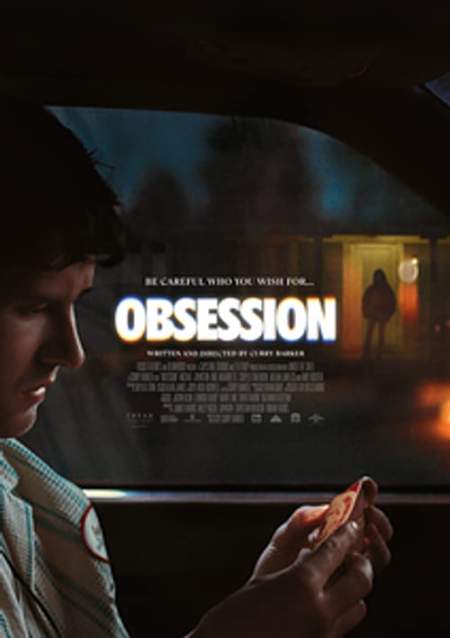

Movies

Release Date: 15 May 2026 (US) · 29 May 2026 (India)
Director: Curry Barker
Writer: Curry Barker
Cast: Michael Johnston, Inde Navarrette, Cooper Tomlinson, Megan Lawless, Andy Richter
Genre: Supernatural Horror / Psychological Horror
Runtime: 109 minutes
IMDb: 8.2 / 10
Rotten Tomatoes: 96%
Produced by: Blumhouse Productions, Capstone Pictures, Tea Shop Productions
Distributed by: Focus Features
Budget: $750,000
Box Office: $108+ million worldwide
Story: Bear (Michael Johnston) is a shy, awkward employee at a music store who has been secretly in love with his childhood best friend Nikki (Inde Navarrette) for years. Unable to confess his feelings, he buys a mysterious novelty toy called the "One Wish Willow" from a New Age shop for $6.99 — a kitschy item that promises to grant its owner one wish. Bear wishes that Nikki would love him "more than anything else in the world." And just like that, she does. But what begins as a dream-come-true quickly spirals into a nightmare. Nikki's affection becomes excessive, erratic, and violent. Her autonomy is stripped away — her body is no longer her own. She is trapped inside an obsession that isn't hers, and Bear is forced to confront the horrifying truth behind his wish. Obsession is a dark, wickedly funny, and genuinely terrifying spin on the classic "be careful what you wish for" tale — a story about entitlement, control, and the danger of confusing obsession with love.